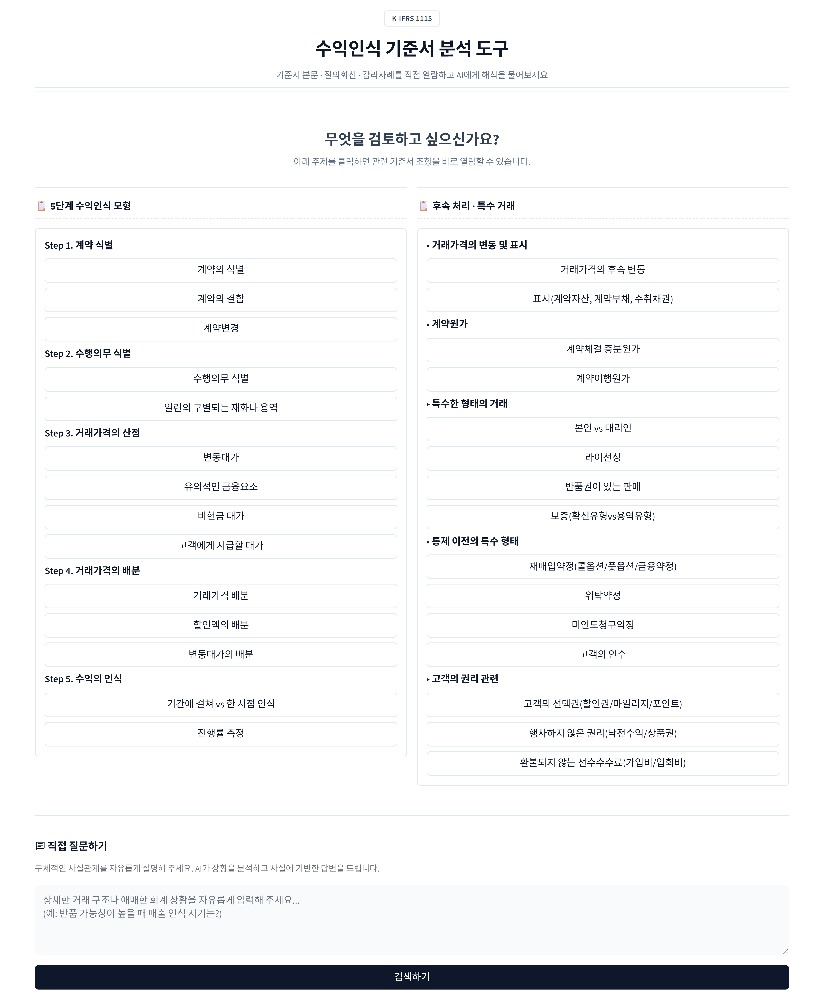
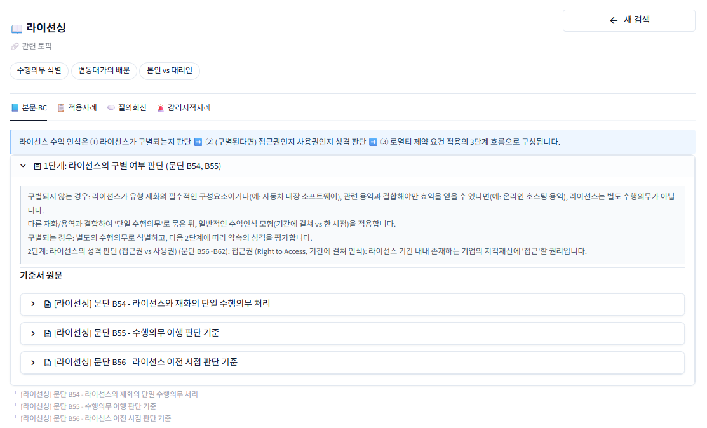
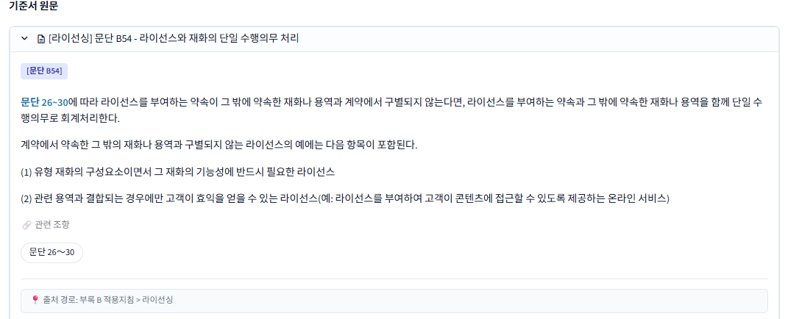
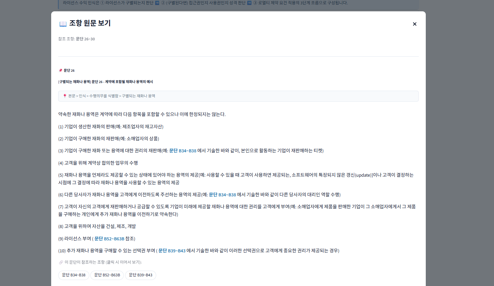
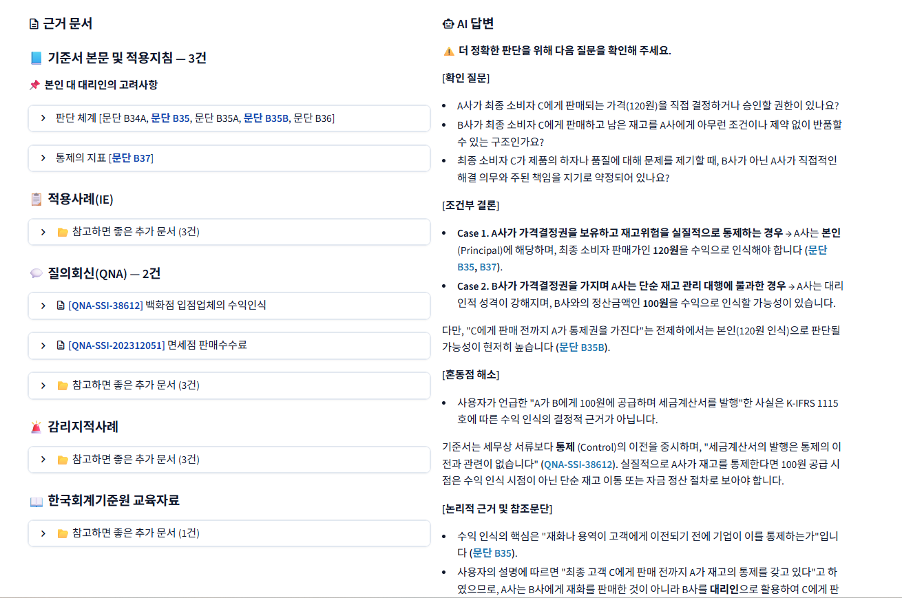

환각(Hallucination)을 방지하는 도메인 특화 RAG 파이프라인

K-IFRS 1115 수익인식 기준서 분석 도구 메인 화면
K-IFRS 제1115호(고객과의 계약에서 생기는 수익)에 특화된 회계감사 전문 AI 도구입니다.
감사인이 객관적 팩트를 선행 확인하고, AI는 구조화된 가이드 내에서만 제한적으로 판단을 내리도록 설계하여
회계 쟁점 분석 시 요구되는
정확성과 신뢰성을 동시에 확보했습니다.
| Frontend | Streamlit (스플릿 뷰 인터페이스) |
| Backend | FastAPI + uvicorn |
| Vector DB | MongoDB Atlas (벡터 검색) |
| Embedding | Upstage Solar (한국어 특화) |
| LLM | Gemini Flash (추론) + GPT-4.1-mini (계산) |
| Reranker | Cohere 다국어 Cross-encoder |
| Infra | Docker + docker-compose / Oracle Cloud |
기존 범용 LLM을 회계 기준서 해석에 그대로 적용할 경우, 근거 없는 답변을 생성하는 환각 문제에 노출됩니다.
이는 감사 실무에서 AI를 과대신뢰하는 2종 오류를 유발하여 심각한 리스크로 이어질 수 있습니다. 따라서
AI에게 자유로운 추론을 허락하지 않고 철저히 통제된 환경에서만 작동하는 확정적 아키텍처가 필요했습니다.
데이터 적재부터 최종 답변 출력까지 전 과정을 통제하는 확정적(Deterministic) 아키텍처를 설계했습니다.
검증된 K-IFRS 도메인 지식 만을 AI에 주입하고, 데이터가 의사결정 트리(Decision Tree)와 PydanticAI를 통과함으로써
AI의 자의적 추론을 원천 차단하고, 정보가 부족한 상황에서도 임의의 판단 대신 안전한 '조건부 결론(Case 분기)'을 도출합니다.
5-Layer Data Pipeline
핵심 문서의 누락을 원천 차단하는 핀포인트 검색과
관련 문서를 보충하는 하이브리드 검색을 병렬로 실행합니다.
검색 결과는 Cohere Cross-encoder가 2차 검증하여 노이즈를 제거하고,
문단 번호 단위까지 출처를 정확히 추적합니다.
Tier 1 — 핀포인트 검색
Decision Tree에 사전 배정된 문서 ID로 DB에서 직접 조회
Tier 2 — 하이브리드 보충 검색
벡터 검색 + BM25 키워드 검색을 RRF로 융합
Reranker (Cohere Cross-encoder)
1차 검색 결과 30건을 질문과 동시에 읽고 관련성을 재평가. 2단계 가중치로 문서의 실무 가치를 차등 반영합니다.
질의의 복잡도와 유형에 따라 최적의 모델을 자동 선택합니다.
7개 모델 218회 A/B 테스트를 통해, 회계 추론과 산술 정확도가 단일 모델로 양립 불가함을 발견하고 듀얼트랙을 채택했습니다.
Gemini Flash
회계 추론 및 기준서 해석 질문 처리
e.g. "수익 인식 시점은?"
GPT-4.1-mini
산술/계산 문제 전담 처리
e.g. "변동대가 배분 금액은?"
파이프라인의 신뢰성을 정량적으로 입증하기 위해, 모델 선정부터 최종 배포까지 3단계에 걸친 체계적인 품질 검증을 수행했습니다.
5개의 질문(난이도별)으로 7개 LLM을 4라운드에 걸쳐 비교 평가하여 핵심 발견을 도출했습니다.
핵심 발견: 회계 추론과 산술 정확도는 단일 모델로 양립 불가
Gemini Flash
회계 추론 1위 / 산술 20~40%
GPT-4.1-mini
회계 추론 4위 / 산술 100%
의사결정: 듀얼트랙 라우팅 채택
데이터 파싱 결함을 수정하여 프로젝트 최대 단일 개선(+40%p)을 달성했습니다.
| 지표 | Before | After | 개선폭 |
|---|---|---|---|
| 검색 적중률 | 36% | 76% | +40%p |
| 계산 라우팅 정확도 | 33% | 100% | +67%p |
| 검색 속도 | 3.7초 | 0.6초 | -84% |
검색 적중률 76%는 Top-1 기준이며, 실제 시스템은 상위 3개를 활용하므로 Top-3 기준 적중률은 100%입니다.
실제 감사인이 물을 법한 7개 유형 53건의 질문을 설계하고, 정답 기준을 사전 정의한 뒤 각 3회씩 반복 호출하여 정확성을 수동 채점했습니다.
88.7%
Pass Rate (141/159)
0건
환각(Hallucination)
7유형
거래상황/이론/라우팅/계산/멀티턴/신규/스트레스
미통과 18회(6건)는 "분기를 하나 더 제시했으면 좋겠다" 수준의 표현 이슈이며, 잘못된 정보 생성은 159회 중 0건.

문단을 펼치면 원문 전체가 표시되고, 하단에 해당 문단이 참조하는 관련 조항이 버튼으로 자동 표시됩니다.

관련 조항 버튼을 클릭하면 해당 조항의 원문 전체를 팝업으로 즉시 확인할 수 있습니다. 조항 간 연결을 따라가며 기준서의 논리 구조를 파악합니다.


이 시스템은 AI 챗봇이라기보다 "규칙 기반 전문 검색 시스템"에 가깝습니다. AI에게 자유로운 추론을 허용하면 더 다양한 질문에 답할 수 있지만, 근거 없는 답변(환각)이 구조적으로 불가능한 현재의 보장이 깨집니다.
대응 가능
대응 불가능
왜 한계를 유지하는가?
유연성은 범용 LLM에 맡기고, 무결성에 집중 : 업데이트를 통해 '자유 질문 모드'를 추가할 수도 있습니다. 하지만 최신 정보나, 구체적인 정답이 제시되지 않은 새로운 사례등은 대형 LLM(ChatGPT, Gemini 등)을 활용하는 것이 더 효율적이고 합리적인 선택입니다. 본 시스템은 범용 LLM이 보장하지 못하는 '환각이 없는 확정적 근거 제시'를 위해 발전됐습니다. 대화의 자유도를 잃더라도 엄격한 제약을 유지하는 것이, 해당 프로젝트가 가져야 할 최우선 가치라고 판단했습니다.